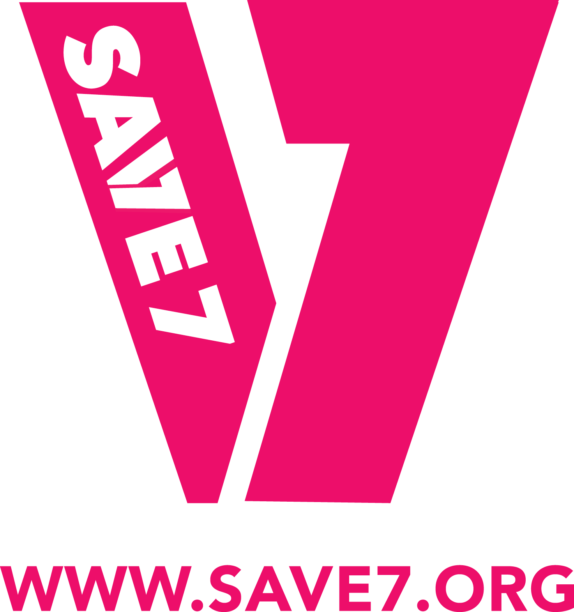

Prototype — wayfinder ticket #10: Design Certificate layout. Three structurally different variants below.
Switch with the bottom bar or the ←/→ keys. Flip the Level to see what changes between certificates
(currently: only the Level name — the brand kit's 2-colour palette is deliberately restrained, so this
prototype assumes one consistent colour treatment across all three Levels rather than colour-coding them).
Level:
SAVE7
CERTIFICATE OF COMPLETION
Thandiwe Nkosi
This certifies that the above learner has successfully completed
Beginner Level

This Certificate is issued by Save7 to recognise completion of a Course Level. No individual signatory — issued in the organisation's name.
CERTIFICATE OF COMPLETION
Thandiwe Nkosi
Has completed the following Level of the Save7 organ donation course:
Beginner Level
CERTIFICATE OF COMPLETION
This certifies that
Thandiwe Nkosi
has completed all Stages and requirements of the Level below, as part of the Save7 organ donation awareness course.